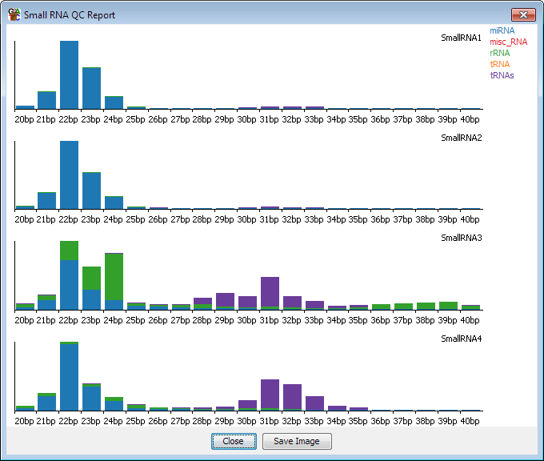

The Small RNA QC plot is intended to be an initial step in the analysis of small RNA data. It looks at the proportions of different subtypes of small RNA within reads of different lengths so you can easily see if the proportional breakdown of different small RNAs is comparable between your samples.

The options are simply a way to select which feature tracks you want to use in the plot. You can also specify the length limits for the reads you're going to profile